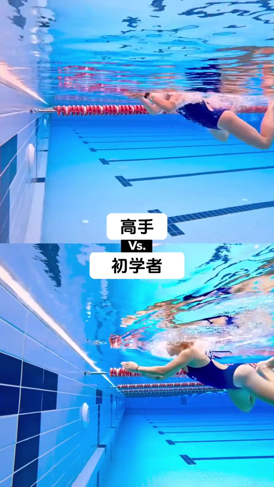
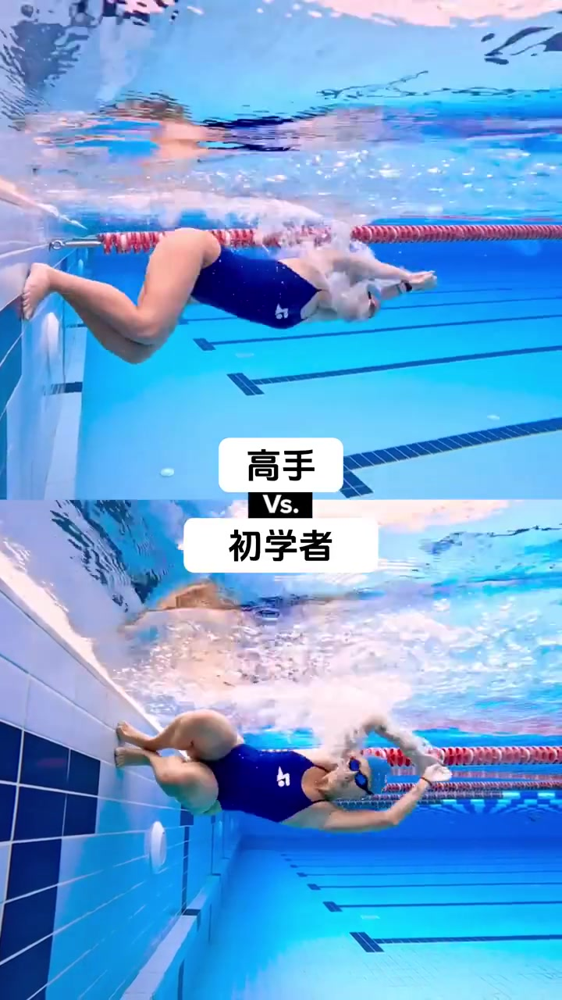
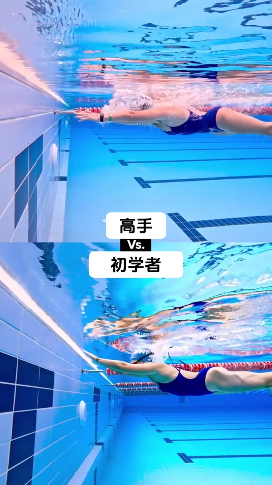
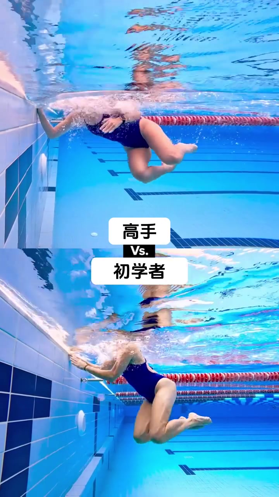
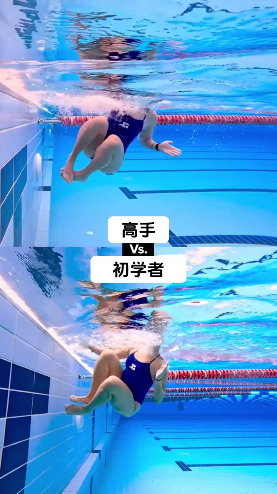
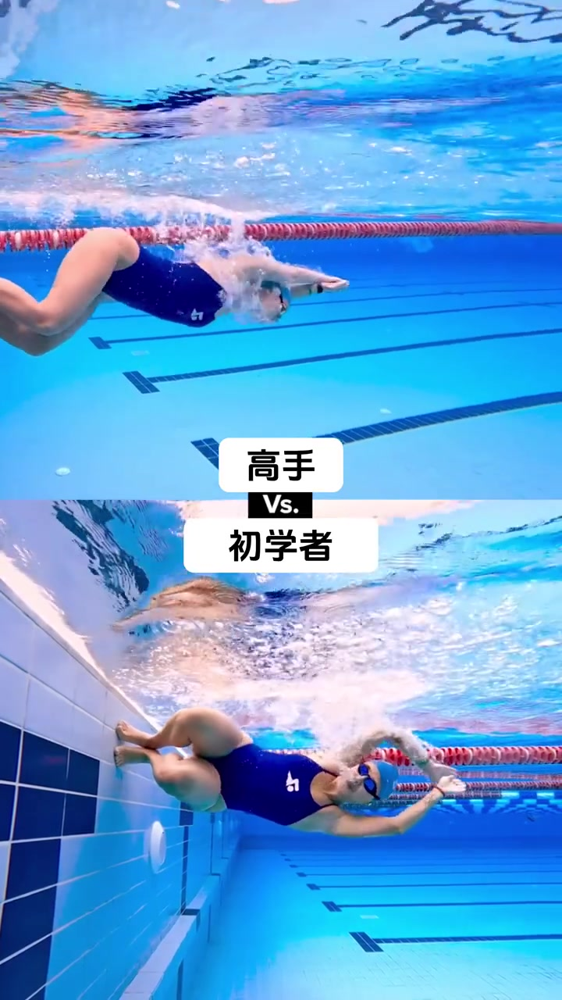
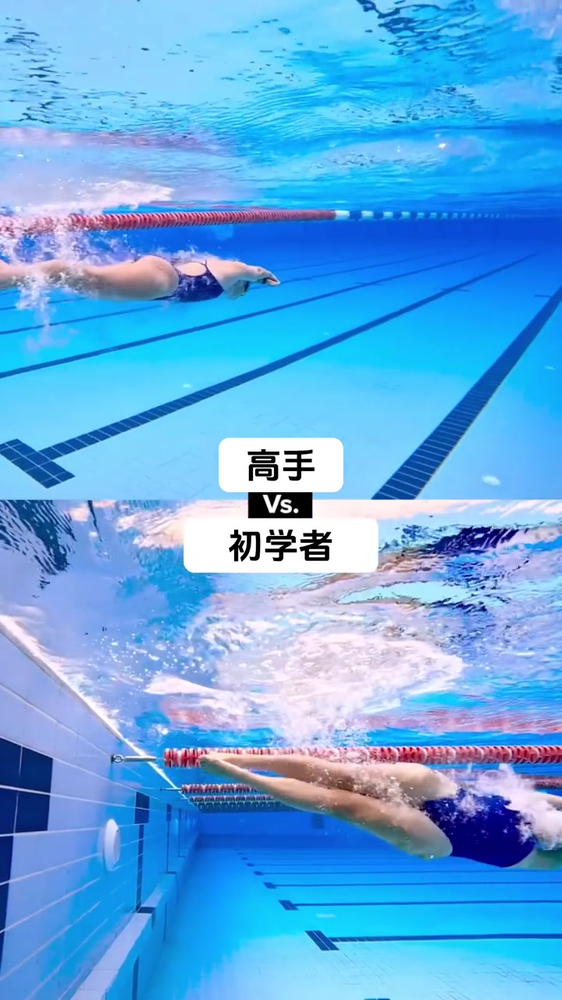

00:00开场：分屏摆好了对照组
视频一开场就是标准的分屏结构：上格标注「高手」，下格标注「初学者」，两位女性泳者以自由泳同时冲向同一面泳池墙。镜头从水下拍摄，看得到蓝白瓷砖池壁和红白浮标绳。此刻两人身位几乎并排，还看不出差距——所有的悬念都留给了接下来几秒的转身动作。

00:02-00:04谁先摸到墙：触壁的第一个时间差
转身的第一步是单手触壁。画面显示高手率先伸手完成触壁，并且几乎在同一瞬间开始屈膝收腿；下格的初学者手臂还保持前伸姿势，触壁与收腿的动作慢了半拍。这个差距很小，如果不是分屏对比几乎察觉不到，但它是后面所有差距的起点。

00:06-00:09蹬壁蜷体：转身的核心发力点
接下来几秒是转身的核心：贴壁、屈膝、蜷体、蹬出。高手的身体先一步收成紧凑的团状，双脚稳稳贴住池壁准备发力；初学者虽然也在做同样的动作，但身形相对松散，屈膝节奏落后一拍。到蹬壁瞬间，两人几乎同时发力蹬离池壁，但因为进入蜷体姿势的时间不同，蹬出的时机也随之错开。


00:10-00:13出墙提速：流线型展开的时间差才是关键
这是整段视频最能说明问题的几秒。高手蹬离池壁之后几乎立刻把身体展开成流线型——手臂前探、身体拉长、头夹在两臂之间，整个人像一支箭一样滑出去；而初学者在同一时刻仍然保持着蜷缩的姿态，还没有完成"从团身到流线"的切换。等到初学者终于展开身体时，高手已经滑出去一段距离，并且已经开始划水加速。这正好印证了笔记文案里的说法：顶级选手在"进"和"出"两个阶段都更快进入流线型，从而把速度保留了下来。


00:15结尾：速度差距被拉开
视频在两人速度差距最明显的时候收尾：高手保持流线姿态划开水面持续加速，初学者仍处在展开阶段努力追赶。全程只有16秒，但转身瞬间的每一步——触壁快慢、蜷体紧凑度、流线展开时机——环环相扣，最终叠加成看得见的速度落差。

补充资料（笔记文案原文）：「剧透：这位顶级游泳选手在进出转弯时都更快地进入流线，这让她保持了速度，以便顺利高效地转弯！」——这是作者本人对视频要点的文字总结，并非视频口播内容，列于此处作为背景参考。